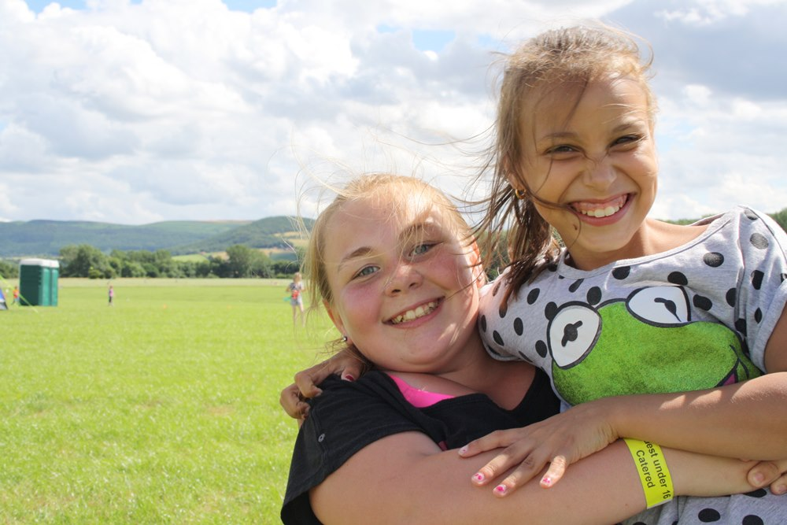

Who we are and what we're about
Kidz Klub works in the inner city and outer estates of Leeds. At the moment our work reaches 2,000 children each term time week in North, South, East and West Leeds.
What our people say
I get so much more out of it than I give.
- Cynthia Alvarez
Joined because I thought it was something I could do, but it became a huge part of my life.
- Richard May
The challenges of child poverty are my problem too.
- Olivia Jacobs